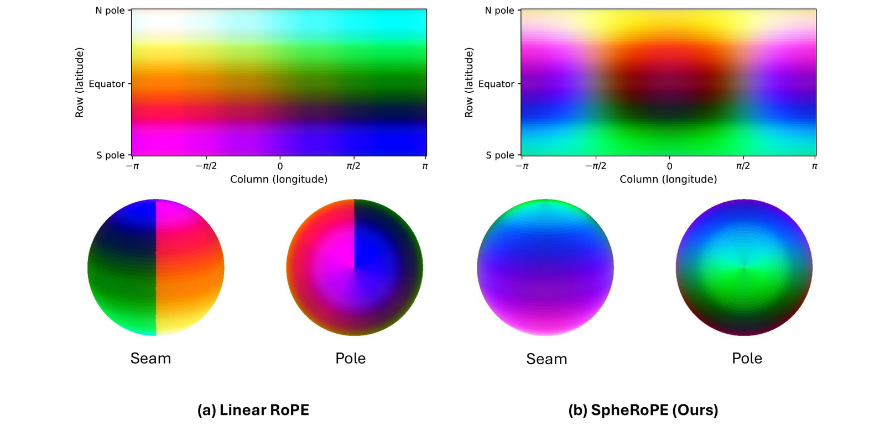

A single framework for 360° image and video generation that injects spherical priors into pre-trained Diffusion Transformers at inference time — no fine-tuning, no per-sample optimization, no architectural changes.
The same two test-time components plug into Flux.1, Flux.2, and LTX-Video, covering text-to-panorama and image-to-panorama tasks without retraining, and inherit the full creative breadth of each base model.
Two orthogonal, test-time-only components that inject spherical geometry into pre-trained diffusion transformers.

A valid ERP panorama must satisfy two topological constraints that standard linear RoPE fundamentally violates:
Instead of one uniform fix, we partition the width-axis RoPE channels by their harmonic alignment with the image width and treat each band according to its role:
Pre-trained diffusion models already exhibit weak ERP behavior (polar stretching, horizon curvature) when prompted for 360° scenes. To amplify that latent prior and complement the hard geometry from Spherical RoPE, we extend classifier-free guidance to a three-way formulation:
The geometric term uses an anchored prompt — the user prompt concatenated with a geometric ERP description — so the difference εgeo−εcond isolates pure projection geometry, orthogonal to semantic content. The scales wsem and γ can be tuned independently; setting γ = 0 cleanly recovers standard CFG.
Drag to pan around the panoramas. Compare our results with baselines in real-time.
Interactive panoramic video. Drag to look around while the video plays.
@article{SpheRoPE2026,
title={SpheRoPE: Zero-Shot Optimization-Free 360° Panorama Generation with Spherical RoPE},
author={Or Hirschorn and Aaron Olender and Eli Alshan and Ianir Ideses and Lior Fritz and Sagie Benaim},
year={TBD},
journal={TBD},
eprint={TBD},
archivePrefix={arXiv},
primaryClass={TBD},
url={TBD}
}